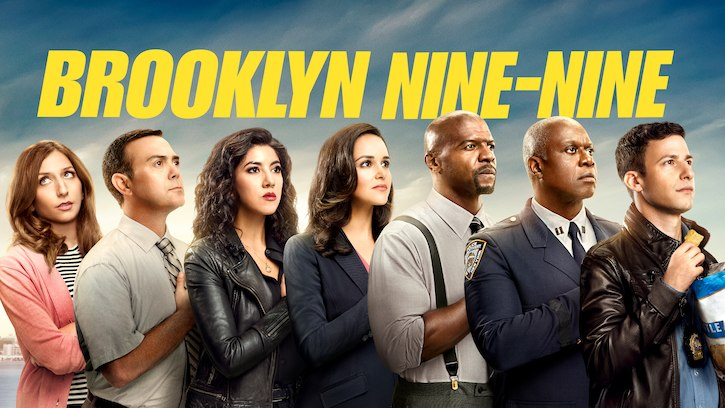
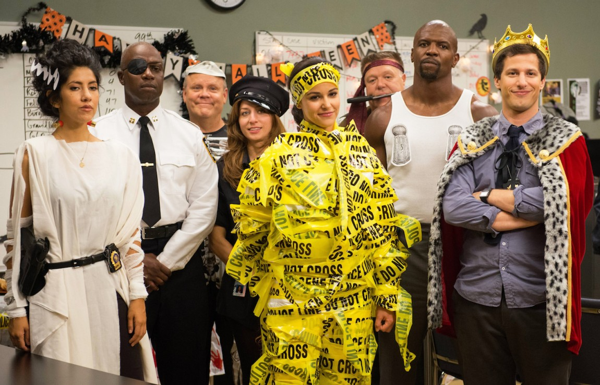

 Brooklyn Nine-Nine acompanha a fictícia 99ª delegacia de polícia no distrito do Brooklyn, em Nova York. Andy Samberg é Jake Peralta, um detetive que ama o seu trabalho, mas o leva não tão a sério. A rotina da delegacia, e consequentemente de Peralta, é alterada quando assume a chefia o Capitão Raymond Holt (Andre Braugher, que além de fantástico, já foi indicado três vezes ao Emmy de melhor ator coadjuvante em série de TV – comédia e musical por seu papel). Holt é severo, não ri, não se envolve nas trapalhadas de sua equipe e leva tudo (tudo mesmo!) muito a sério.
Entre as tantas respostas possíveis para o sucesso da série, uma delas é bem óbvia. Seriados e programas policiais são há anos febre nos canais norte-americanos. Law & Order (e todas suas derivações), CSI, Criminal Minds, Rookie Blue e Chicago P.D. são apenas alguns dos inúmeros títulos que abarrotaram os canais nos últimos anos (não podendo esquecer de NYPD Blue, conhecida por aqui como Nova York Contra o Crime).
Dentro deste contexto, Brooklyn Nine-Nine não perde tempo e escracha todos os clichês (e estereótipos) presentes nestes shows policiais.Para arrematar, conseguiram unir um elenco que se mostrou craque em fazer rir, cada um representando um estereótipo dos programas anteriormente citados.
 Amy Santiago (Melissa Fumero, de Gossip Girl) é a policial fiel a seu chefe, a quem vê como mentor e a quem procura agradar de todas as formas; Charles Boyle (Joe Lo Truglio, de Wet Hot American Summer: First Day of Camp) é o melhor amigo de Jake e um policial que leva uma vida difícil, principalmente após seu divórcio; Gina Linetti (Chelsea Peretti) é a assistente do Capitão, sempre se envolvendo nos casos da equipe e mantendo uma postura de superior frente aos outros; Rosa Diaz (Stephanie Beatriz) é a policial casca grossa, chegada em métodos violentos e sem muitas habilidades sociais, mas que no íntimo é menos rude; Scully (Joel McKinnon Miller) e Hitchcock (Dirk Blocker) são os policiais mais velhos da equipe e a dupla de estabanados com quem ninguém se interessa em trabalhar; já Terry Jeffords (Terry Crews) é o policial que enfrenta uma rotina dupla entre ser um bom sargento (o primeiro posto abaixo do capitão) e um pai e marido presente, o que faz com que ele viva constantes conflitos.
Sem dúvida que o roteiro afiado e as piadas ácidas com o universo policial também dão consistência ao programa, de forma que,deram a Brooklyn Nine-Nine o Globo de Ouro de melhor série de televisão – comédia e musical logo em sua primeira temporada, no ano de 2014. Não fosse o bastante, Samberg levou o troféu de melhor ator em série de televisão – comédia e musical, desbancado Jim Parsons, de The Big Bang Theory, o grande favorito.
| Temporada | Melhores episódios | Quantidade de episódios |
|---|---|---|
| 1ª | 1x13 - 'The Bet' | 22 |
| 2ª | 2x4 - 'Halloween 2' | 23 |
| 2x12 - 'Beach House' | ||
| 3ª |
3x05 - 'Halloween 3' 4x16 - 'Moo Moo' |
22 |
| 4ª | 22 | |
| 5ª | 5x10 - 'Game Night' | 22 |